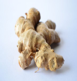
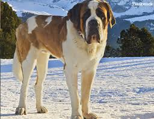

Um mig
Ég heiti Kristófer Máni og bý í grafavoginum í Reykjavik er fæddur árið 2000. Er í tækniskólanum að læra um tölvur og coding fyrir fullt af hluttum sem er frekar skemmtilegt víst það tengist áhugamálum mínum smá
Mín áhugamál af mestu lagi er bara leikir og ekki mikið annað.
Hundar: Saint Bernard
Originally the Saint Bernard dog breed was used to guard the grounds of Switzerland’s Hospice Saint Bernard as well as to help find and save lost and injured travelers. Today the St. Bernard enjoys the comforts of family life in many homes across the world. He is versatile and excels in the show ring and in obedience trials, drafting (pulling a cart or wagon), and weight pulling competitions.
The ancestors of the St. Bernard share a history with the Sennenhunds. The St. Bernard, also called Alpine Mountain Dogs or Alpine Cattle Dogs, are the large farm dogs of the farmers and dairymen of most notably the French Alps, livestock guardians, herding dogs, and draft dogs as well as hunting dogs, search and rescue dogs, and watchdogs. These dogs are thought to be descendants of molosser type dogs brought into the Alps by the ancient Romans, and the St. Bernard is recognized internationally today as one of the Molossoid breeds.
Það er hægt að finna Saint Bernard hérna

Hérna er audio file fyrir Saint Bernard að gelta